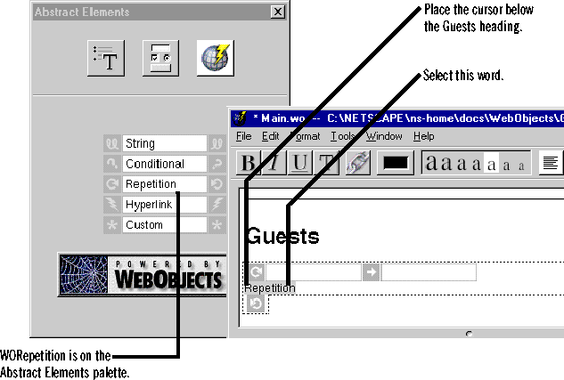
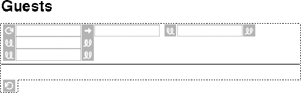

Creating a Simple WebObjects Application
 Table of Contents
Table of Contents  Previous Section
Previous Section
Add abstract dynamic elements to the page
To display the list of guests that have visited the page, you'll use abstract dynamic elements. Unlike the form elements you added earlier, abstract elements have no true equivalent in HTML. Instead, your application determines what these elements look like.
- Place the cursor at the bottom of the page.
- In the palette window, click the third icon to display the Abstract Elements palette.
- Drag a Repetition element onto the page.

- Select the word "Repetition" inside the Repetition object, and press the Delete key twice to delete the word and the carriage return before it.
- Drag three String elements from the Abstract Elements palette. After each String element, enter a carriage return so that each string is on a separate line.
- Place the cursor below the third String element inside the Repetition, choose the Static Elements palette, and drag a horizontal line onto the page.

You're done adding elements to the page now, so you can close the palette window and save the Main.wo component.
A closer look
You just added several abstract dynamic elements: a WORepetition and three WOStrings. The WOStrings are simply dynamic strings. The application decides what text the strings should display at run time. WORepetition is an object with two parts: contents and a list. You just defined the contents. They are the three WOStrings and the horizontal rule. The list you define when you bind the WORepetition, which you'll do next. WORepetition is a complex element. You'll read about how it works after you make its bindings.
Although this example uses WORepetition and WOString only to display output, you could also use them to display input. To learn more about these elements, see the Dynamic Elements section of the WebObjects Reference.
Table of Contents  Next Section
Next Section